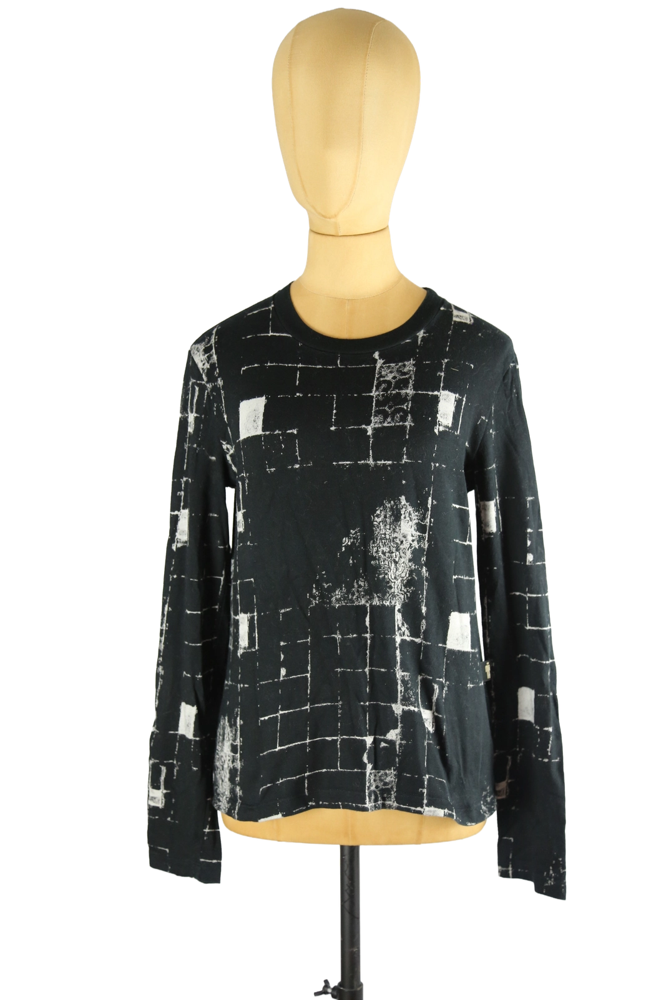

1 / 10Aus dem kuratierten Archiv von Disorder119. Charakterstarkes Longsleeve von Jean Paul Gaultier aus der JPG-Linie, mit abstraktem Allover-Print in Schwarz und Weiß. Das grafische Muster erinnert an fragmentierte Raster, architektonische Strukturen und gealterte Oberflächen – ein typisches Motiv aus Gaultiers experimenteller Phase, in der Mode, Kunst und Oberfläche bewusst ineinandergriffen. Der weiche, elastische Stoff fällt fließend und liegt angenehm am Körper, ohne einzuengen. Klassischer Rundhalsausschnitt, schmale Ärmel und eine klare, reduzierte Silhouette lenken den Fokus vollständig auf den Print. Auf der Rückseite dezentes „JPG by Gaultier“-Label am Nacken. Ein zurückhaltendes, aber sehr markentypisches Piece, das sowohl solo als auch im Layering funktioniert. Details: Marke: Jean Paul Gaultier (JPG) Farbe: Schwarz / Weiß Größe: M Passform: Körpernah bis leicht locker Ausschnitt: Rundhals Ärmel: Langarm Material: Weicher, elastischer Stoff (Materialangabe nicht mehr vorhanden) Fotografie & Passform: Das Kleidungsstück wurde auf unserer Standard-Schneiderpuppe fotografiert, die wir zur konsistenten Darstellung aller Pieces verwenden. Maße der Schneiderpuppe: Brustumfang 89 cm Taillenumfang 66 cm Hüftumfang 89 cm Schulterbreite 38 cm Zustand: Sehr guter gebrauchter Zustand. Leichte, altersbedingte Tragespuren im Print möglich, insgesamt sauber und gepflegt. Rechtliche Hinweise: Verkauf als gebrauchtes Kleidungsstück. Die Beschreibung erfolgt nach bestem Wissen und Gewissen. Farbnuancen können aufgrund von Lichtverhältnissen und Bildschirmdarstellung leicht abweichen. Disorder119 steht für sorgfältig kuratierte Designerstücke mit Fokus auf Authentizität, Qualität und zeitlose Relevanz.
Disorder119 · Kuratiertes Archiv für Designer-, Vintage- und Contemporary-Mode. Jedes Stück wird einzeln ausgewählt, fotografiert und beschrieben.